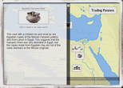
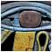
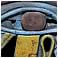

|
|
 |
www.ancientegypt.co.uk
Created specifically for KS2 pupils, Ancient Egypt consists of 10 object-based curriculum units with advice for teachers and full supporting materials for classroom use.
|
|  |
www.ancientcivilizations.co.uk
Created for KS2 and 3 pupils, Ancient Civilizations is a theme-based exploration of civilizations from around the world. Includes a Staff Room with advice for teachers and supporting materials for classroom use.
|
|
An introduction to the Museum for KS2 children
and families, featuring hundreds of artefacts. With games, activities and teaching resources.
|
Search the Museum
Use our picture search to browse the Museum's fantastic Egyptian collections |
The mummy's tomb game
Read about the Rosetta Stone, then solve the hieroglyph spell to open the tomb.. ..if you dare |
Animal mummies Tour
 At one time, no animal was safe from the mummy-making ancient Egyptians.. At one time, no animal was safe from the mummy-making ancient Egyptians.. |
Activities to print out
Solve the Egypt crossword, Design a charm bracelet, Compare ancient sandals |
|
Over 5000 objects online with high quality images, background information and online Tours.
|
|
Mummy: the inside story
Online Tour to accompany the 3D digital exhibition |
|
Cleopatra: from history to myth
A brief history of Cleopatra of Egypt's life |


 
